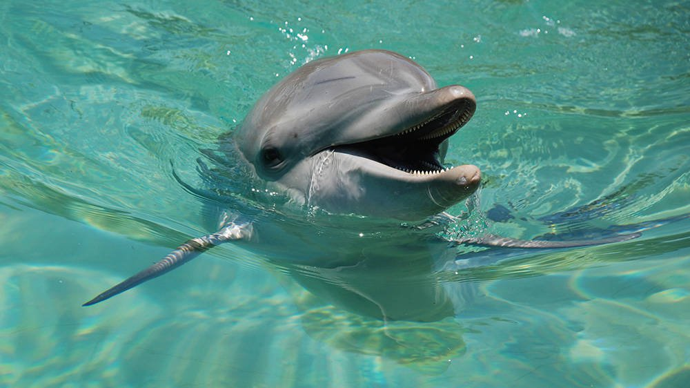

Nudge is out searching for food with his mother.
They are begging for fish from the fishing boats.
Scroll to read
Nudge is out searching for food with his mother.
They are begging for fish from the fishing boats.
His mom is hurt and unable to hunt food.
Babydolphins needs to be with their moms until they are 3 years old. Nudge is much younger than this and unable to survive on his own.
Nudge is later found alone.
He is injured.
A fishingline is entagled around his tale. He has multiple wounds and a large stingray barb stuck in his side.
His mom is nowhere to be seen.
He is brought to SeaWorld.
Here he is taken under Amity’s flipper – a Australian Humpback Dolphin, who adopts him as his grandson.
Nudge will be cruising around the SeaWorld Lagoona for the rest of his life. Showing off all of his new tricks, teaching kids about bottlenose dolphins and wildlife.
Nudge is only one of many animals rescued by Sea World. The Sea World Rescue Team are on call 24 hours everyday, 365 days a year should a marine animal need rescuing. Since Sea World’s opening the Rescue Team have attended many hundreds of strandings and entanglements of dolphins, whales, birds and sea snakes, pioneering new rescue techniques and equipment.
